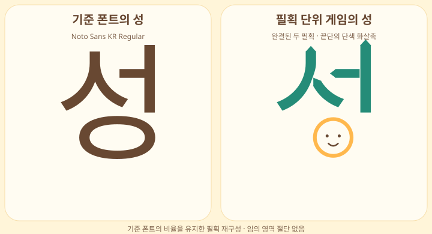
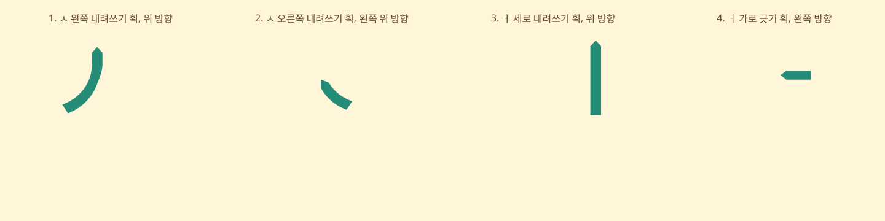

실제 폰트와 게임의 ‘성’ 비교

ㅅ은 위에서 왼쪽으로 내려쓰는 한 획과 오른쪽으로 내려쓰는 한 획으로 재구성했습니다. 완성형 윤곽을 이동 방향의 영역으로 잘라 나누지 않습니다. 왼쪽 획의 안쪽 줄기와 오른쪽 획의 시작 단면은 필획 구조에 맞게 재구성했으므로 원본 폰트와 완전히 같지는 않습니다.
화살촉은 각 필획의 끝단에만 배치하며 내부 흰색 삼각형을 사용하지 않습니다. ㅇ은 기존 원형 캐릭터를 유지하므로 기준 폰트의 타원형 ㅇ과 다릅니다.
각 필획을 따로 보기

각 조각의 본체와 시작·끝 단면, 화살촉 위치·방향은 별도 데이터입니다. 곡선 형태를 따라 휘어 이동하지 않고 화살촉 방향으로 도형 전체가 평행 이동합니다.